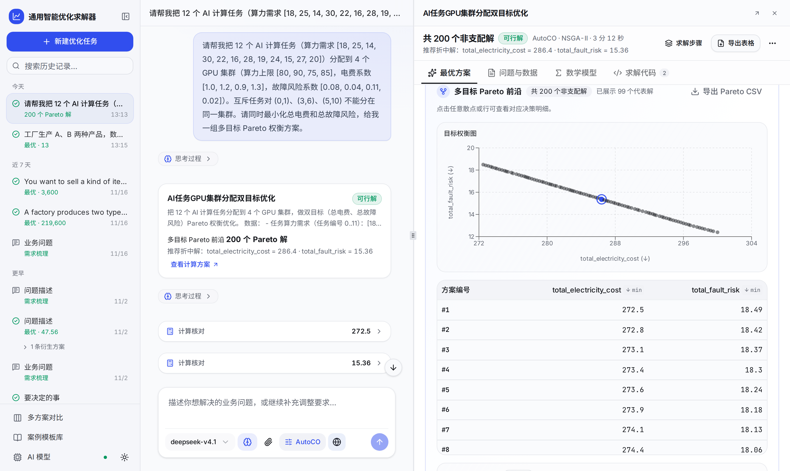
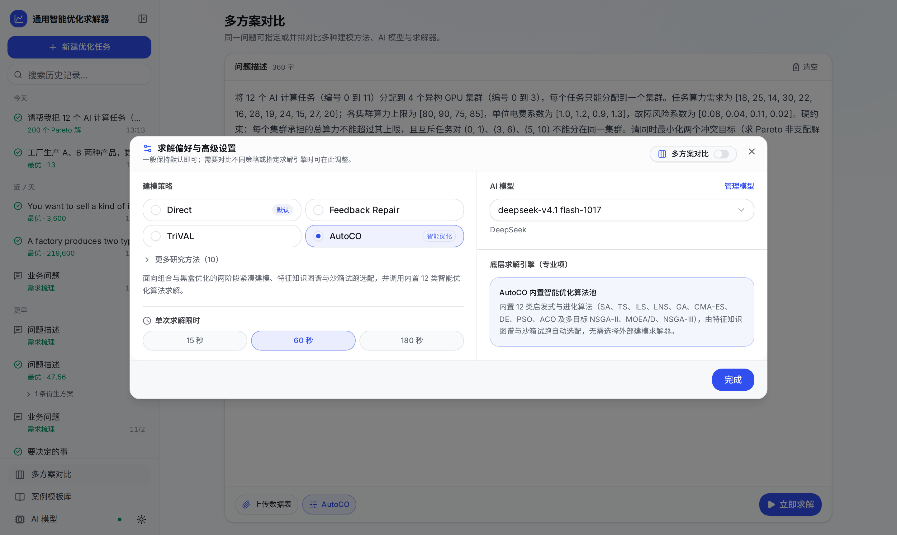

表格直传与在线编辑
支持拖拽 Excel (.xlsx)、CSV、TSV、JSON，内置表格视图可直接增删行与改列名，完整数据直通求解沙箱。
无需编写公式或求解器代码。描述目标并上传表格，系统自动在 9 大精确框架与 AutoCO 算法池间路由，输出沙箱验证的最优解与 Pareto 前沿。
非支配权衡解集
每天恰好 2 人，每人只排 1 天。
每个仓库服务 1 家门店，全部门店完成补货。
所有示例均由内置精确求解与实测 Pareto 数据驱动；点击任意目标点、拖动滑块或切换约束，实时观察方案变化。
对话式优化工作台
无需面对满屏参数面板。直接用大白话说明目标、拖入 Excel/CSV，系统自动完成建模、沙箱求解、方案解读与可视化；想改预算或加限制，继续追问即可。

双引擎架构
传统大模型优化工具只能生成线性规划代码，一遇到大规模组合优化、非线性黑盒或多目标权衡就会超时甚至报错。平台将数学规划与 AutoCO 智能优化算法池合二为一，按问题特征自动选配最优引擎。
Pyomo · Gurobi · OR-Tools · SCIP · CVXPY · COPT · PuLP · CPMpy · CasADi
SA · TS · ILS · LNS · GA · CMA-ES · DE · PSO · ACO · NSGA-II · MOEA/D · NSGA-III
| 测试场景 | 传统精确建模 | AutoCO 智能优化 |
|---|---|---|
| 30 节点二次指派（QAP-30） | 超时（距最优 +6.2% ~ +10.7%） | 18 秒逼近最优（+0.29%，132 万次评估） |
| 三目标 GPU 集群调度（36 任务） | 仅能输出 1 个加权单点 | 200 个零违规 Pareto 解（HV +11.5%） |
| 中小规模线性 / 整数规划 | 毫秒~秒级证明全局最优 | 自动路由至精确引擎 |
全量方法自由体验
日常使用保持“自动求解”即可；研究者或运筹工程师点一下就能体验 Direct、Feedback Repair、TriVAL、AutoCO 等 14 种建模方法，指定具体大模型与求解器，并在同一问题上并排横评结果。

核心能力
支持拖拽 Excel (.xlsx)、CSV、TSV、JSON，内置表格视图可直接增删行与改列名，完整数据直通求解沙箱。
所有优化代码都在无网 Docker 沙箱内由真实求解器运行，所有目标值与决策明细 100% 源自求解器输出。
当业务条件互相矛盾时，自动提取冲突约束证据并用业务语言解释原因，给出可执行的放宽建议。
自动高亮推荐折中解（Knee Point），支持在交互散点图与明细表之间联动点选，直观比较不同业务偏好。
基于冻结的原方案一键衍生“旺季需求 +20%”“预算收紧 10%”等多个假设场景，并行计算并横向对比决策变化。
一条 Docker Compose 命令即可团队部署，支持 OpenAI、DeepSeek、Claude、Gemini 及本地 vLLM / Ollama。
常见问题
可以。打开工作台直接用日常语言说明目标和约束，拖入 Excel 或 CSV 表格就能自动完成建模、求解并输出带中文解读的方案，结果还能一键导出 Excel。
默认不需要自己选。对于线性、混合整数、凸优化等结构化问题，平台优先调用精确求解器证明全局最优；遇到大规模复杂组合调度、黑盒非线性或多目标 Pareto 权衡时，自动切换 AutoCO 12 类智能优化算法池。当然，你也可以随时手动指定任意策略或求解器。
大模型只负责把业务描述翻译成数学模型与可执行代码，真正的求解全部在隔离的 Docker 求解沙箱里由真实求解器/算法引擎完成，界面展示的所有目标值和决策变量都直接读取求解器输出，支持随时核对数学公式、代码与求解日志。
完全支持。项目采用 Apache-2.0 开源协议，通过 Docker Compose 即可在个人电脑或内网服务器一键启动，支持配置多家云端 API 或内网私有部署的 OpenAI 兼容模型。